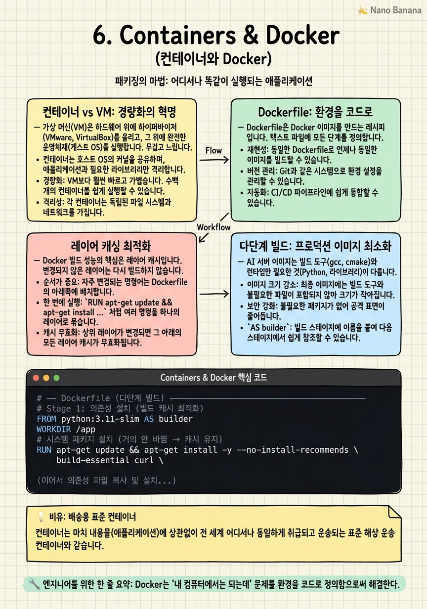

Containers & Docker

🎯 학습 목표
- 컨테이너가 VM과 다른 이유와 장점을 설명할 수 있다
- Python AI 서비스를 위한 효율적인 Dockerfile을 작성할 수 있다
- 레이어 캐싱을 활용해 빌드 시간을 최소화할 수 있다
- Docker Compose로 다중 서비스(API + DB + Redis)를 로컬에서 실행할 수 있다
- 다단계 빌드(Multi-stage build)로 프로덕션 이미지 크기를 최소화할 수 있다
"내 맥북에서는 잘 되는데 서버에서는 왜 안 돼요?" — 이 질문은 Docker 이전 세계에서 수백만 시간의 디버깅 시간을 낭비하게 만든 근본 원인이었습니다. 개발자 컴퓨터의 Python 버전, 라이브러리 버전, 환경 변수, OS 차이가 프로덕션 서버와 달랐기 때문입니다. Docker는 이 문제를 환경을 코드로 정의함으로써 완전히 해결합니다.
컨테이너(Container)는 애플리케이션과 그 실행에 필요한 모든 것(코드, 런타임, 라이브러리, 설정)을 하나의 독립적인 패키지로 묶는 기술입니다. 어떤 환경에서든 동일하게 실행됩니다. MacBook, Ubuntu 서버, AWS EC2, Kubernetes 어디서든.
AI 엔지니어에게 Docker는 선택이 아니라 필수입니다. PyTorch, CUDA, 수십 개의 의존성을 가진 AI 환경은 재현성 문제에 특히 취약합니다. CUDA 버전 하나가 맞지 않으면 GPU 추론이 안 됩니다. Docker는 이 복잡한 환경을 버전 관리하고, 팀 전체가 동일한 환경을 사용하도록 보장합니다.
핵심 내용
컨테이너 vs VM: 경량화의 혁명
가상 머신(VM)은 하드웨어 위에 하이퍼바이저(VMware, VirtualBox)를 올리고, 그 위에 완전한 운영체제(게스트 OS)를 부팅합니다. 격리성이 높지만 무겁습니다. VM 하나가 수 GB의 디스크와 수백 MB의 RAM을 차지합니다. 부팅에 수십 초~수 분이 걸립니다.
컨테이너는 호스트 OS의 커널을 공유하면서 프로세스 수준의 격리를 제공합니다. Linux의 namespaces(프로세스, 네트워크, 파일시스템 격리)와 cgroups(CPU, 메모리 제한)를 활용합니다. 결과적으로 컨테이너는 수 MB의 디스크와 수 MB의 RAM을 사용하고, 밀리초 단위로 시작합니다.
| 비교 | VM | 컨테이너 | |---|---|---| | 격리 단위 | 운영체제 전체 | 프로세스 | | 시작 시간 | 수십 초~분 | 밀리초~초 | | 이미지 크기 | 수 GB | 수십~수백 MB | | 커널 공유 | 없음 | 호스트 커널 공유 | | 보안 격리 | 강함 | 중간 (gVisor, Kata로 강화 가능) |
Dockerfile: 환경을 코드로
Dockerfile은 Docker 이미지를 만드는 레시피입니다. 각 명령어가 하나의 레이어(Layer) 를 만듭니다. 레이어는 캐시됩니다 — 변경되지 않은 레이어는 다음 빌드에서 재사용됩니다.
자주 사용하는 Dockerfile 명령어
FROM <base-image> — 베이스 이미지 지정. AI 서버는 python:3.11-slim 또는 nvidia/cuda:12.1.0-cudnn8-runtime-ubuntu22.04를 많이 씁니다.
WORKDIR /app — 작업 디렉토리 설정. 이후 명령어는 이 경로 기준으로 실행됩니다.
COPY requirements.txt . — 파일 복사. 소스 코드보다 먼저 requirements.txt를 복사해 레이어 캐시를 활용합니다.
RUN pip install -r requirements.txt — 명령 실행. RUN 결과가 레이어로 저장됩니다.
ENV PYTHONUNBUFFERED=1 — 환경 변수 설정. Python stdout 버퍼링 비활성화는 로그가 즉시 출력되게 합니다.
EXPOSE 8000 — 문서화 목적 포트 선언. 실제 포트 바인딩은 docker run -p에서 합니다.
CMD ["uvicorn", "main:app", "--host", "0.0.0.0"] — 컨테이너 시작 시 실행되는 기본 명령.
레이어 캐싱 최적화
Docker 빌드 성능의 핵심은 레이어 캐시입니다. 변경이 적은 레이어를 먼저, 변경이 잦은 레이어를 나중에 배치해야 합니다.
잘못된 순서 (매 빌드마다 pip install 재실행):
`
COPY . .
RUN pip install -r requirements.txt
`
소스 코드가 조금이라도 바뀌면 COPY . . 레이어가 무효화되어 pip install을 처음부터 다시 합니다.
올바른 순서 (소스 코드 변경 시 의존성 설치 캐시 유지):
`
COPY requirements.txt .
RUN pip install -r requirements.txt
COPY . .
`
requirements.txt가 변경되지 않으면 pip install 결과가 캐시됩니다. 소스 코드만 변경되면 마지막 COPY . .만 재실행됩니다. AI 프로젝트에서 PyTorch 설치는 5~10분이 걸리므로 캐시 효율이 매우 중요합니다.
.dockerignore 파일은 .gitignore와 유사하게 빌드 컨텍스트에서 제외할 파일을 지정합니다. __pycache__, .git, *.pyc, venv/, *.ckpt(모델 가중치)를 제외하면 빌드 컨텍스트 전송 시간과 이미지 크기를 줄일 수 있습니다.
다단계 빌드: 프로덕션 이미지 최소화
AI 서버 이미지는 빌드 도구(gcc, cmake)와 런타임만 필요한 것(Python, 라이브러리)이 다릅니다. 다단계 빌드는 두 환경을 분리해 최종 이미지를 최소화합니다.
1단계(빌더): 빌드에 필요한 모든 도구를 포함한 환경에서 패키지를 설치합니다.
2단계(런타임): 빌더에서 설치된 패키지만 복사합니다. 빌드 도구는 포함되지 않습니다.
이 방식으로 이미지 크기를 수 GB에서 수백 MB로 줄일 수 있습니다. 공격 표면(Attack Surface)도 줄어 보안이 향상됩니다.
non-root 사용자 로 실행하는 것도 중요합니다. 컨테이너 내부에서 root로 실행하면, 컨테이너 탈출 취약점이 있을 때 호스트에 root 접근이 가능합니다. Dockerfile에 RUN useradd -m appuser && USER appuser를 추가합니다.
Docker Compose: 멀티 서비스 로컬 환경
실제 서비스는 혼자 실행되지 않습니다. API 서버 + PostgreSQL + Redis + 모델 서버가 함께 실행됩니다. Docker Compose는 이 멀티 서비스 환경을 하나의 YAML 파일로 정의하고 docker compose up 한 번으로 실행합니다.
docker-compose.yml에서 각 서비스는 이미지, 포트, 환경 변수, 볼륨, 의존 관계를 정의합니다.
depends_on은 서비스 시작 순서를 제어합니다. 단, 프로세스 시작을 의미할 뿐 "준비됨"을 보장하지 않습니다. DB가 시작됐다고 연결 가능 상태가 된 것은 아닙니다. healthcheck + condition: service_healthy를 사용하거나, 애플리케이션에서 재시도 로직을 구현해야 합니다.
네임드 볼륨 은 컨테이너가 재시작되어도 데이터가 유지되도록 합니다. postgres_data:/var/lib/postgresql/data처럼 설정하면 DB 데이터가 컨테이너 외부(Docker 관리 볼륨)에 저장됩니다.
💡 비유로 이해하기
Docker 컨테이너를 이해하는 가장 직관적인 비유는 국제 표준 화물 컨테이너입니다. 컨테이너 이전에는 배에 짐을 실을 때 화물의 종류(사과, 자동차 부품, 의류)마다 다른 방법으로 포장하고 선적했습니다. 항구마다 다른 규격이 있어 화물을 다시 포장해야 했습니다.
표준 컨테이너가 도입된 후, 어떤 화물이든 20피트 또는 40피트 컨테이너에 넣으면 배, 기차, 트럭이 동일한 방식으로 처리합니다. 화물이 무엇인지 상관없이 운송 방법이 표준화됩니다.
Docker 컨테이너가 바로 이것입니다. Python FastAPI든, Java Spring이든, Go 서버든 — 모두 동일한 Docker 형식으로 패키징됩니다. 맥북, Ubuntu EC2, GKE 어디서든 docker run으로 실행할 수 있습니다. 환경에 따른 포장 방법 차이가 사라집니다.
💻 코드 예시
AI 모델 서빙을 위한 최적화된 Dockerfile과 Docker Compose 설정입니다. 레이어 캐싱, 다단계 빌드, 보안 설정을 모두 포함합니다.
# ── Dockerfile (다단계 빌드) ──────────────────────────
# Stage 1: 의존성 설치 (빌드 캐시 최적화)
FROM python:3.11-slim AS builder
WORKDIR /app
# 시스템 패키지 설치 (거의 안 바뀜 → 캐시 유지)
RUN apt-get update && apt-get install -y --no-install-recommends \
build-essential curl \
&& rm -rf /var/lib/apt/lists/*
# 의존성 파일만 먼저 복사 (소스 코드 변경 시 캐시 유지)
COPY requirements.txt .
RUN pip install --no-cache-dir --prefix=/install -r requirements.txt
# Stage 2: 런타임 이미지 (빌드 도구 제외)
FROM python:3.11-slim AS runtime
WORKDIR /app
# 빌더에서 설치된 패키지만 복사
COPY --from=builder /install /usr/local
# 소스 코드 복사 (가장 마지막 — 가장 자주 변경됨)
COPY . .
# 보안: non-root 사용자
RUN useradd -m -u 1000 appuser && chown -R appuser:appuser /app
USER appuser
EXPOSE 8000
CMD ["uvicorn", "main:app", "--host", "0.0.0.0", "--port", "8000", "--workers", "4"]
# ── docker-compose.yml ────────────────────────────────
# version: '3.9'
# services:
# api:
# build: .
# ports: ["8000:8000"]
# environment:
# DATABASE_URL: postgresql://user:pass@db:5432/mlops
# REDIS_URL: redis://redis:6379
# depends_on:
# db: {condition: service_healthy}
#
# db:
# image: postgres:15
# volumes: [postgres_data:/var/lib/postgresql/data]
# healthcheck:
# test: ["CMD-SHELL", "pg_isready -U user"]
# interval: 5s
# retries: 5
#
# redis:
# image: redis:7-alpine
#
# volumes:
# postgres_data:다단계 빌드의 builder 스테이지는 build-essential(gcc 등)을 포함해 패키지를 컴파일합니다. runtime 스테이지는 컴파일된 결과물만 COPY --from=builder로 가져옵니다. 최종 이미지에 빌드 도구가 없어 크기와 공격 표면이 줄어듭니다. healthcheck의 pg_isready는 PostgreSQL이 실제 연결 가능한 상태인지 확인합니다.
🏭 현업에서의 평가
✅ 시니어가 보는 것
- 레이어 캐싱을 의식한 COPY 순서 배치
- non-root 사용자로 실행
- .dockerignore로 불필요한 파일 제외
- 다단계 빌드로 최종 이미지 최소화
⚠️ 레드 플래그
- Dockerfile에 API 키나 비밀번호를 하드코딩하는 경우 (이미지 히스토리에 영구적으로 남음)
- `pip install`을 소스 코드 COPY 이후에 배치하는 경우
- GPU 서버용 이미지에 전체 CUDA 개발 툴킷을 포함하는 경우 (수십 GB)
🎤 예상 인터뷰 질문
- Docker 이미지에 비밀번호가 포함된 이후 그 레이어를 삭제해도 여전히 노출될 수 있는 이유는?
- 같은 코드인데 로컬 Docker에서는 작동하고 K8s에서는 안 될 때 어떤 것들을 확인하시겠어요?
- AI 모델 가중치 파일(수 GB)을 이미지에 포함해야 할 때 어떤 접근 방식을 쓰겠어요?
✨ 핵심 요약
컨테이너 = 재현성
Docker는 '내 컴퓨터에서는 되는데' 문제를 환경을 코드로 정의함으로써 해결한다.
레이어 캐시 순서
의존성(requirements.txt) 먼저 COPY → pip install → 소스 코드 COPY. 변경이 적은 것을 앞에 배치.
다단계 빌드
빌드 도구와 런타임을 분리해 최종 이미지 크기를 최소화하고 보안을 강화한다.
non-root 실행
컨테이너는 root가 아닌 별도 사용자로 실행해 컨테이너 탈출 취약점의 영향을 최소화한다.
Docker Compose = 로컬 환경
API + DB + Redis를 한 YAML로 정의하고 docker compose up으로 전체 스택을 실행한다.
시크릿은 환경 변수
Dockerfile에 비밀번호를 절대 넣지 않는다. 이미지 히스토리에 영구적으로 남는다.